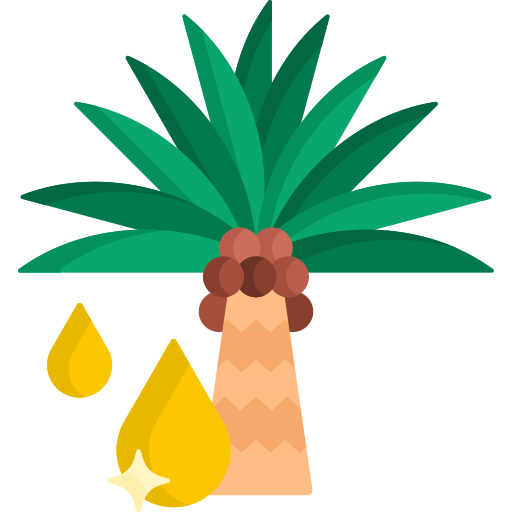
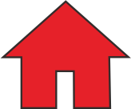

<!DOCTYPE html>
<html lang="en">

<head>
  <title>Survey EUDR</title>
  <link rel="apple-touch-icon" sizes="180x180" href="img/favicon/apple-touch-icon.png">
  <link rel="icon" type="image/png" sizes="32x32" href="img/favicon/favicon-32x32.png">
  <link rel="icon" type="image/png" sizes="16x16" href="img/favicon/favicon-16x16.png">
  <link rel="manifest" href="/site.webmanifest">
  <meta name="msapplication-TileColor" content="#da532c">
  <meta name="theme-color" content="#ffffff">
  <!-- end favicon -->
  <meta charset="UTF-8" />
  <meta http-equiv="X-UA-Compatible" content="IE=edge" />
  <meta name="viewport" content="width=device-width, initial-scale=1.0" />
  <link rel="stylesheet" href="https://unpkg.com/leaflet@1.7.1/dist/leaflet.css"
    integrity="sha512-xodZBNTC5n17Xt2atTPuE1HxjVMSvLVW9ocqUKLsCC5CXdbqCmblAshOMAS6/keqq/sMZMZ19scR4PsZChSR7A=="
    crossorigin="" />
  <link rel="stylesheet" href="geocoding/leaflet-search.src.css" />
  <link rel="stylesheet" href="L.Control.Layers.Tree.css" />
  <link rel="stylesheet" href="L.Icon.Pulse.css" />
  <link rel="stylesheet"
    href="https://cdnjs.cloudflare.com/ajax/libs/leaflet.markercluster/1.5.3/MarkerCluster.Default.css"
    integrity="sha512-6ZCLMiYwTeli2rVh3XAPxy3YoR5fVxGdH/pz+KMCzRY2M65Emgkw00Yqmhh8qLGeYQ3LbVZGdmOX9KUjSKr0TA=="
    crossorigin="anonymous" referrerpolicy="no-referrer" />
  <link rel="stylesheet"
    href="https://cdn.jsdelivr.net/npm/leaflet.locatecontrol@0.76.0/dist/L.Control.Locate.min.css" />
  <link rel="stylesheet" href="https://ppete2.github.io/Leaflet.PolylineMeasure/Leaflet.PolylineMeasure.css" />
  <link rel="leaflet.defaultextent.css" />
  <!-- <link href="style.eb127ecea7b7559c70ac.css" rel="stylesheet" /> -->
  <!-- Font awesome icon (links) -->

  <style>
    html,
    body,
    #map {
      height: 100%;
      width: 100%;
      margin: 0px;
    }

    .Cave {
      margin-left: 6px;
      margin-top: 0px;
      padding-right: 5px;
      padding-bottom: 4px;
      object-position: center;
      vertical-align: middle;
    }

    .kotak {
      margin-left: 2px;
      margin-top: auto;
      padding-bottom: 4px;
      padding-right: 3px;
      vertical-align: middle;
    }

    

    .home {
      margin-left: 1px;
      margin-top: auto;
      padding-bottom: 4px;
      padding-right: 3px;
      vertical-align: middle;
    }

    .FAT {
      margin-left: 8px;
      margin-top: auto;
      padding-bottom: 4px;
      padding-right: 2px;
      vertical-align: middle;
    }


    #map>div.leaflet-control-container>div.leaflet-bottom.leaflet-left>div.leaflet-control.leaflet-bar {
      border: 0px;
    }

    #map>div.leaflet-control-container>div.leaflet-top.leaflet-right>div.leaflet-control-locate.leaflet-bar.leaflet-control>a {
      background-color: black;
    }


    #map>div.leaflet-control-container>div.leaflet-top.leaflet-right>div.leaflet-control-locate.leaflet-bar.leaflet-control>a>span {
      background-color: #ff0000;
      transition: transform 0.3s ease-in-out;
      /* Animasi perubahan ukuran */
    }

    #map>div.leaflet-control-container>div.leaflet-top.leaflet-right>div.leaflet-control-locate.leaflet-bar.leaflet-control>a>span:hover {
      transform: scale(2);
      /* Memperbesar elemen saat mouse diarahkan */
    }


    #map>div.leaflet-control-container>div.leaflet-top.leaflet-right>div.leaflet-bar.leaflet-control-defaultextent.leaflet-control>a {
      background-color: #030000;
    }

    #map>div.leaflet-control-container>div.leaflet-bottom.leaflet-right>div.leaflet-control-layers.leaflet-control>a {
      background-color: #030000;
    }

    #map>div.leaflet-control-container>div.leaflet-bottom.leaflet-right>div.leaflet-control-layers.leaflet-control-layers-expanded.leaflet-control {
      background-color: #d7d5d5;
    }

    #map>div.leaflet-control-container>div.leaflet-bottom.leaflet-right>div.leaflet-control-layers.leaflet-control-layers-expanded.leaflet-control>section>div.leaflet-control-layers-separator {
      border-color: rgb(150, 149, 149);
    }

    #map>div.leaflet-control-container>div.leaflet-top.leaflet-left>div>a.search-button {
      background-color: #ffff00;
      border-color: #ff0000;
    }

    /*pop-up*/

    body {
      margin: 0;
      padding: 0;
    }

    .popup {
      top: 0;
      width: 100%;
      height: 100%;
      background-color: rgba(0, 0, 0, 0.4);
      position: fixed;
      opacity: 0;
      transition: all 0.2s ease-in;
    }

    .popup__content {
      width: 400px;
      max-width: 100%;
      height: auto;
      text-align: center;
      position: relative;
      margin: 10vh auto;
    }

    .popup__image {
      width: 100%;
      margin-bottom: 15px;
      z-index: 99999;
    }

    .popup__dismiss {
      position: absolute;
      top: -20px;
      right: 0;
      width: 25px;
    }

    .popup--show {
      opacity: 1;
      z-index: 99999;
    }

    .popup--close {
      display: none;
      transition: all 0.2s ease-out;
    }

    .search-input {
      font-family: Courier;
    }

    .search-input,
    .leaflet-control-search {
      max-width: 150px;
    }

    div.leaflet-pulsing-icon {
      background-position: center;
      background-image: url("img/cave.png") !important;
      background-size: cover;
    }
  </style>
</head>

<body>


  <div id="map"></div>

  <script src="https://unpkg.com/leaflet@1.7.1/dist/leaflet.js"></script>
  <script src="https://unpkg.com/leaflet"></script>
  <script src="https://unpkg.com/leaflet.icon.pulse"></script>
  <script src="geocoding/leaflet-search.src.js"></script>
  <script src="https://code.jquery.com/jquery-2.1.4.min.js"></script>
  <script src="https://cdnjs.cloudflare.com/ajax/libs/jquery/3.6.0/jquery.js"></script>

  <script src="L.Icon.Pulse.js"></script>
  <script src="https://ppete2.github.io/Leaflet.PolylineMeasure/Leaflet.PolylineMeasure.js"></script>
  <script src="leaflet.defaultextent.js"></script>
  <script src="L.Control.Layers.Tree.js"></script>
  <script src="https://cdnjs.cloudflare.com/ajax/libs/leaflet.markercluster/1.5.3/leaflet.markercluster.js"
    integrity="sha512-OFs3W4DIZ5ZkrDhBFtsCP6JXtMEDGmhl0QPlmWYBJay40TT1n3gt2Xuw8Pf/iezgW9CdabjkNChRqozl/YADmg=="
    crossorigin="anonymous" referrerpolicy="no-referrer"></script>


  <!-- Geolocation -->
  <script src="https://cdn.jsdelivr.net/npm/leaflet.locatecontrol@0.76.0/dist/L.Control.Locate.min.js"
    charset="utf-8"></script>
  <script src="https://sikk.magelangkab.go.id/assets/homepage//assets/js/antpath/leaflet-ant-path.js"></script>
  <script src="https://sikk.magelangkab.go.id/assets/homepage//assets/js/antpath/leaflet-ant-path.es6.js"></script>

  <script>
    // Inisialisasi peta di dalam elemen dengan id 'map'
    var map = L.map("map", {
      zoomControl: false,
    }).setView([-1.5392975374876476, 102.59650680240749], 13);

    // Menambahkan kontrol skala dengan satuan metrik
    L.control
      .scale({
        metric: true,
      })
      .addTo(map);

    // Menambahkan layer OpenStreetMap
    var OpenStreetMap = L.tileLayer("https://{s}.tile.opentopomap.org/{z}/{x}/{y}.png", {
      maxZoom: 19,
      attribution: 'WebGIS Design © <a href="https://maiwarman.github.io/Profile/" target=_blank >Mai Warman</a> 2024',
    }).addTo(map);

    

    // Buat fungsi untuk menyesuaikan ukuran peta saat ukuran halaman berubah
    function resizeMap() {
      var mapContainer = document.getElementById("map");
      mapContainer.style.width = window.innerWidth + "px";
      mapContainer.style.height = window.innerHeight + "px";
      map.invalidateSize();
    }

    // Panggil fungsi resizeMap() saat halaman dimuat atau ukuran jendela browser berubah
    window.addEventListener("resize", resizeMap);
    window.addEventListener("DOMContentLoaded", resizeMap);

    // Menambahkan basemaps ke dalam leaflet
    var googleStreets = L.tileLayer(
      "http://{s}.google.com/vt/lyrs=m&x={x}&y={y}&z={z}",
      {
        maxZoom: 20,
        subdomains: ["mt0", "mt1", "mt2", "mt3"],
        attribution: 'WebGIS Design © <a href="https://www.youtube.com/channel/UCw1KKeYlrcgVf4-PGDyvG2Q" target=_blank >Mai Warman</a> 2024',
      }
    );

    var googleHybrid = L.tileLayer(
      "http://{s}.google.com/vt/lyrs=s,h&x={x}&y={y}&z={z}",
      {
        maxZoom: 20,
        subdomains: ["mt0", "mt1", "mt2", "mt3"],
        attribution: 'WebGIS Design © <a href="https://www.youtube.com/channel/UCw1KKeYlrcgVf4-PGDyvG2Q" target=_blank >Mai Warman</a> 2024',
      }
    );

    // Control layer untuk switching basemaps
    var baseMaps = {
      "OpenStreetMap": OpenStreetMap,
      "Google Streets": googleStreets,
      "Google Hybrid": googleHybrid,
      // Tambahkan layer tambahan jika diperlukan di sini
    };


    // ini khusus untuk codingan kebun

    var pulsingIcon = L.icon.pulse({
      iconSize: [20, 20],
      color: "red",
      fillColor: "red",
      heartbeat: 0.5,
    });

    var kebunIcon = L.icon({
      iconUrl: "img/cave.png",
      iconSize: [20, 20],
      className: "cave",
    });

    // Layer GeoJSON untuk marker kebun dan ikon pulsasi
    var kebunAndPulsingLayer = L.geoJson(null, {
      pointToLayer: function (feature, latlng) {
        var markerOptions = {
          icon: pulsingIcon, // Menggunakan ikon kebun
        };
        if (feature.properties && feature.properties.pulsing) {
          markerOptions.icon = pulsingIcon; // Menggunakan ikon pulsasi jika properti 'pulsing' tersedia
        }
        return L.marker(latlng, markerOptions);
      },
      onEachFeature: function (feature, layer) {
        layer.bindPopup(function (layer) {
          return `
        <table style='border-collapse: collapse; border-radius: 10px; overflow: hidden;'>
          <tr style="background-color: #FF0000;">
            <td style="border: 0.4px solid black; border-color: grey; padding: 8px; color: white;"><strong>Nama</strong></td>
            <td style="border: 0.4px solid black; border-color: grey; padding: 8px; color: white;">${layer.feature.properties.NAMA}</td>
          </tr>
          <tr style='background-color: #BABBD1;'>
            <td style='border: 0.4px solid black; border-color: grey; padding: 8px;'><strong>Luas </strong></td>
            <td style='border: 0.4px solid black; border-color: grey; padding: 8px;'>${feature.properties.Luas}</td>
          </tr>
          <tr style='background-color: #BABBD1;'>
            <td style='border: 0.4px solid black; border-color: grey; padding: 8px;'><strong>Desa</strong></td>
            <td style='border: 0.4px solid black; border-color: grey; padding: 8px;'>${feature.properties.DESA}</td>
          </tr>
          <tr style='background-color: #BABBD1;'>
            <td style='border: 0.4px solid black; border-color: grey; padding: 8px;'><strong>Kecamatan</strong></td>
            <td style='border: 0.4px solid black; border-color: grey; padding: 8px;'>${feature.properties.KECAMATAN}</td>
          </tr>
          <tr style='background-color: #BABBD1;'>
            <td style='border: 0.4px solid black; border-color: grey; padding: 8px;'><strong>Kabupaten</strong></td>
            <td style='border: 0.4px solid black; border-color: grey; padding: 8px;'>${feature.properties.KABUPATEN}</td>
          </tr>
        </table>
        <br>
        <div style='text-align:center;'>
          <a target='_blank' href='https://www.google.com/maps/dir/?api=1&destination=${feature.geometry.coordinates[1]},${feature.geometry.coordinates[0]}&travelmode=driving'>
            <span style='background-color: #007bff; color: #fff; padding: 8px 20px; border-radius: 4px; text-decoration: none; border: none;'>Go Location</span>
          </a>
        </div>
      `;
        });
      },
    });

    // Marker Cluster Group untuk mengelompokkan marker kebun dan pulsasi
    var markers = L.markerClusterGroup();

    // Memuat data GeoJSON dari file "kebun.geojson"
    $.getJSON("kebun_gapoktan_jambi.geojson", function (data) {
      kebunAndPulsingLayer.addData(data);
      markers.addLayer(kebunAndPulsingLayer);
      map.addLayer(markers);
    });

    // Event listener untuk overlayadd dan overlayremove
    map.on("overlayadd", function (event) {
      if (event.name === "icon_kebun") {
        map.addLayer(markers);
        console.log(event.name === "icon_kebun"); // seharusnya mengembalikan true
      }
    });

    map.on("overlayremove", function (event) {
      if (event.name === "icon_kebun") {
        map.removeLayer(markers);
        console.log(event.name === "icon_kebun"); // seharusnya mengembalikan true
      }
    });


    // MAP INFO

    var basemapTree = {
      label: "<span style='font-family: Arial; font-size: 12px; text-transform: uppercase;font-weight: bold;'>basemap</span>",
      collapsed: false,
      children: [
        {
          label: "Google Hybrid",
          layer: googleHybrid,
        },
        {
          // label: "Google Satellite",
          // layer: googleSat,
        },
        {
          label: "Google Street",
          layer: googleStreets,
        },
        {
          // label: "Google Terrain",
          // layer: googleTerrain,
        },
        {
          label: "OSM Topo Map",
          layer: OpenStreetMap,
        },
      ],
    };

    var overlaysTree = {
      label: "<span style='font-family: Arial; font-size: 12px; text-transform: uppercase;font-weight: bold;'>Map info</span>",
      children: [

        {
          label: "<b>Kebun</b>",
          layer: markers,
        },
        

      ],
    };

    L.control.layers
      .tree(basemapTree, overlaysTree, {
        collapsed: true,
        position: "bottomright",
      })
      .addTo(map);


    map.attributionControl.setPrefix(false);

    // SET VIEW
    var resetControl = L.control.defaultExtent({
      position: "topright",
      maxWidth: 100,
      maxHeight: 100,
      backgroundColor: "white",
      borderColor: "#ccc",
      borderWeight: 1,
      text: '',
      title: "Set View"
    });

    resetControl.addTo(map);


    // My Location
    L.control
      .locate({
        position: "topright",
        locateOptions: {
          enableHighAccuracy: true,
        },
      })
      .addTo(map);

    //Geocoding
    map.addControl(
      new L.Control.Search({
        url: "https://nominatim.openstreetmap.org/search?format=json&q={s}",
        jsonpParam: "json_callback",
        propertyName: "display_name",
        propertyLoc: ["lat", "lon"],
        marker: L.circleMarker([0, 0], {
          radius: 30,
        }),
        autoCollapse: true,
        autoType: false,
        minLength: 2,
      })
    );

    let options = {
      position: "topright",
      unit: "kilometres",
      useSubunits: true,
      clearMeasurementsOnStop: true,
      showBearings: true,
      bearingTextIn: "In",
      bearingTextOut: "Out",
      tooltipTextFinish: "Click to <b>finish line</b><br>",
      tooltipTextDelete: "Press SHIFT-key and click to <b>delete point</b>",
      tooltipTextMove: "Click and drag to <b>move point</b><br>",
      tooltipTextResume: "<br>Press CTRL-key and click to <b>resume line</b>",
      tooltipTextAdd: "Press CTRL-key and click to <b>add point</b>",
      measureControlTitleOn: "Turn on PolylineMeasure",
      measureControlTitleOff: "Turn off PolylineMeasure",
      measureControlLabel: "&#8614;",
      measureControlClasses: [],
      showClearControl: true,
      clearControlTitle: "Clear Measurements",
      clearControlLabel: "&times",
      clearControlClasses: [],
      showUnitControl: true,
      unitControlUnits: ["kilometres", "landmiles", "nauticalmiles"],
      unitControlTitle: {
        text: "Change Units",
        kilometres: "kilometres",
        landmiles: "land miles",
        nauticalmiles: "nautical miles",
      },
      unitControlLabel: {
        metres: "m",
        kilometres: "km",
        feet: "ft",
        landmiles: "mi",
        nauticalmiles: "nm",
      },
      unitControlClasses: [],
      tempLine: {
        color: "#00f",
        weight: 2,
      },
      fixedLine: {
        color: "red",
        weight: 2,
      },
      startCircle: {
        color: "#000",
        weight: 1,
        fillColor: "#0f0",
        fillOpacity: 1,
        radius: 3,
      },
      intermedCircle: {
        color: "#000",
        weight: 1,
        fillColor: "#ff0",
        fillOpacity: 1,
        radius: 3,
      },
      currentCircle: {
        color: "#000",
        weight: 1,
        fillColor: "#f0f",
        fillOpacity: 1,
        radius: 3,
      },
      endCircle: {
        color: "#000",
        weight: 1,
        fillColor: "#f00",
        fillOpacity: 1,
        radius: 3,
      },
    };

    // Membuat kontrol polylineMeasure dengan opsi yang diberikan
    let polylineMeasure = L.control.polylineMeasure(options);

    // Menambahkan kontrol polylineMeasure ke peta
    polylineMeasure.addTo(map);

    // Menyembunyikan kontrol saat dimuat
    polylineMeasure._container.style.display = 'none';

    // Menanggapi peristiwa mouse di peta
    map.on('mouseover', function () {
      polylineMeasure._container.style.display = 'block';
    });

    map.on('mouseout', function () {
      polylineMeasure._container.style.display = 'none';
    });


    // POPUP INFORMATION
    var popup = document.querySelector(".popup");
    var dismiss = document.querySelector(".popup__dismiss");
    var shop = document.querySelector(".popup__shop");

    setTimeout(function () {
      popup.classList.add("popup--show");
    }, 500);

    dismiss.addEventListener("click", function () {
      console.log("kil dismiss");
      popup.classList.remove("popup--show");
      popup.classList.add("popup--close");
    });
  </script>


  <!-- POP UP -->
  <script>
    const toggleSwitch = document.querySelector(
      '.theme-switch input[type="checkbox"]'
    );

    function switchTheme(e) {
      if (e.target.checked) {
        document.documentElement.setAttribute("data-theme", "dark");
      } else {
        document.documentElement.setAttribute("data-theme", "light");
      }
    }

    toggleSwitch.addEventListener("change", switchTheme, false);

    function switchTheme(e) {
      if (e.target.checked) {
        document.documentElement.setAttribute("data-theme", "dark");
        localStorage.setItem("theme", "dark"); //add this
      } else {
        document.documentElement.setAttribute("data-theme", "light");
        localStorage.setItem("theme", "light"); //add this
      }
    }
    const currentTheme = localStorage.getItem("theme")
      ? localStorage.getItem("theme")
      : null;

    if (currentTheme) {
      document.documentElement.setAttribute("data-theme", currentTheme);

      if (currentTheme === "dark") {
        toggleSwitch.checked = true;
      }
    }
  </script>

</body>

</html>